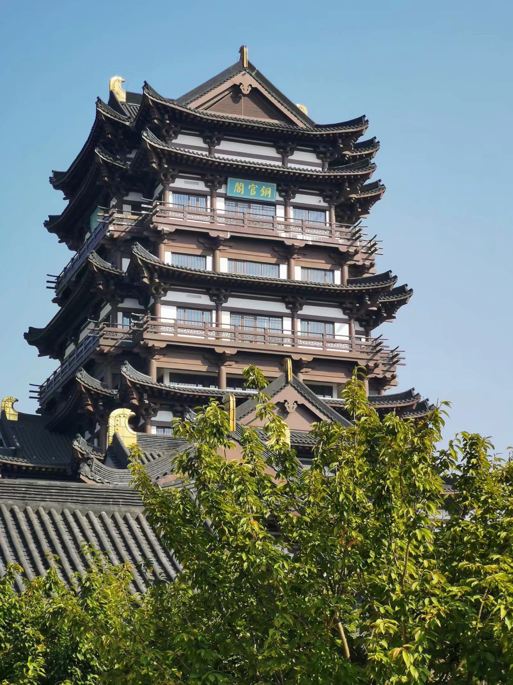

2019年9月23日，湘潭大学新生军训第三营参加了铜官窑研学一日游。铜官窑，丝绸之路
的足迹,是一个湖南人甚至全中国人都闻于耳目的文化名地。邵峰高，湘水长，载着湘大学
子的赤心，伴着清晨氤氲的醒雾，同学们踏上了旅程。一路上大家高唱红歌，斗志昂扬，
势传金柝，于9时许抵达目的地。首先映入眼帘的是一座古镇：五步一楼，十步一阁；杨柳岸,
湖波潋滟；宝塔镇，风韵犹在；湘大人，胸怀热血。今年，是祖国母亲70周年生日，必不可少
的就是为祖国庆生。同学们摆好阵列，严肃而庄重，“我和我的祖国，一刻也不能分割......”，
激扬悦耳的歌声响彻云霄，手中鲜艳的五星红旗迎风飘扬。

《黑石号》上精彩的海思壮举，让人惊叹古人的气节和不畏强敌的勇气及智慧；博物馆中陈列的精
美而古朴瓷器，不难从中发现古人前辈的惊人技艺与情操；现代科技馆中炫彩的5D和各式机器人，
映射出中国日益增长的科技力量。日薄西处，虽带着不舍，但热枕归去，亦无悔。
通过此次研学，同学们深晓祖国的强大与繁荣。尤其作为一名中国人，湘大人，网络工程人，
同学们更要博学笃行，盛德日新。我爱你我亲爱的祖国，我要为你立于世界之林而献身！
（文本由吴昌信，万超超，周亚芳，马薇娜，陆志强提供。）